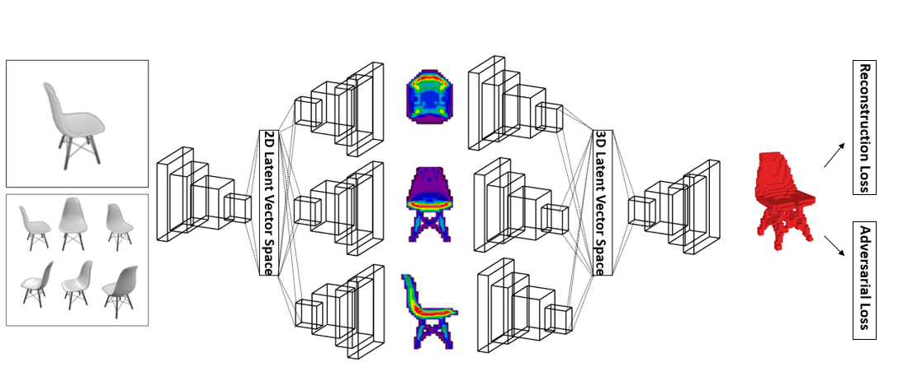
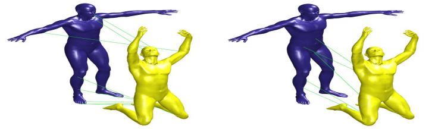
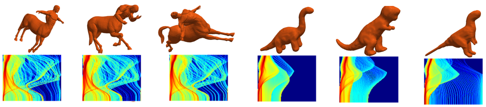

|
Meng Wang |
| Status: | PhD Student |
| Program: | Computer Science and Engineering |
| School: | Tandon School of Engineering, New York University |
| RA Period: | From 2014-09 to 2020-05 |
| I'm About to join Xmotors.AI (CA, USA). Before that, I was a research assistant in NYU Multimedia and Visual Computing Lab, advised by Professor Yi Fang. I am broadly interested in 3D Computer Vision, Pattern Recognition and Deep Learning. |
|  |
Meng Wang, Lingjing Wang, Yi Fang 3DensiNet: 3DensiNet: A robust neural network architecture towards 3D volumetric object prediction from 2D image ACM MM 2017 |
|  |
Jin Xie, Jing Zhu, Yi Fang Learned Binary Spectral Shape Descriptor for 3D Shape Correspondence CVPR 2016 |
|  |
Yi Fang, Jin Xie, Guoxian Dai, Meng Wang, Fan Zhu, Tiantian Xu, Edward Wong 3D Deep Shape Descriptor CVPR 2015 |